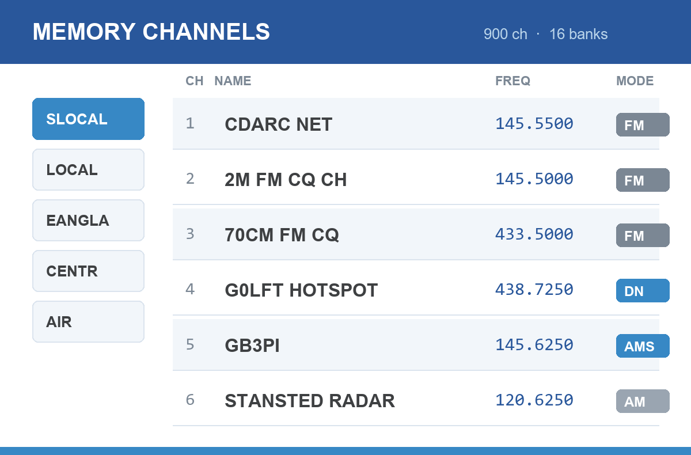

Building a UK repeater memory file for your Yaesu
2026-07-27

Why bother
Typing several hundred repeaters into a handheld by hand is miserable, and you only have to do it again the next time the repeater list changes. Every modern Yaesu can import a CSV instead, which means the whole memory file can be generated: correctly, repeatably, and organised the way you actually operate.
This guide describes the approach I use to build memory files for my FT5D and FTM-310 from the RSGB repeater list. It’s aimed at anyone comfortable running a small script, but the format notes are useful even if you plan to edit the CSV by hand. Some of these traps cost me a lot of time.
Each radio has its own Yaesu application, and each expects a different CSV layout. It’s ADMS-14 for the FT5D and ADMS-20 for the FTM-310, for example. A file built for one will not import correctly into another.
The input: the RSGB repeater list
The source data is the RSGB repeater list, exported as CSV. The columns that matter are:
| Column | What it is |
|---|---|
callsign |
e.g. GB3PI |
band |
2M or 70CM |
TX |
The repeater’s transmit frequency, which is your receive frequency |
RX |
The repeater’s receive frequency, which is your transmit frequency |
modes |
Mode letters: A analogue FM, F Fusion/C4FM, D D-Star, M DMR |
ctcss/cc |
Access tone, where one is required |
where |
Town or location, used for the channel name |
lat, lon |
Used for distance and regional grouping |
This catches everyone once. The list’s TX column is what you tune your receiver to, and RX is what your radio transmits on. Getting these the wrong way round produces a memory file that looks plausible and works for nothing.
What the generator does
The script reads that CSV and writes a complete memory file. The useful work is in the decisions it makes along the way.
Filtering
Only entries worth having end up in the file:
- Must be FM or Fusion (
AorFin the modes column), since a D-Star-only or DMR-only repeater is no use to a Fusion radio. - Must be 2 m (144–148 MHz) or 70 cm (430–440 MHz).
- Cross-band repeaters are dropped. If the input is on 2 m the output must also be on 2 m, otherwise the offset logic is meaningless.
Working out the offset
The offset is derived rather than assumed, by subtracting your transmit frequency from your receive frequency:
- difference essentially zero → simplex, direction
OFF - positive →
+RPT - negative →
-RPT
with the magnitude used as the offset value. This handles the non-standard splits correctly instead of hard-coding 600 kHz and 1.6 MHz everywhere.
Choosing the mode
Straight from the mode letters:
| RSGB modes | Radio setting | Meaning |
|---|---|---|
Both A and F |
AMS |
Automatic mode select, picking FM or C4FM per transmission |
F only |
DN |
Fusion digital narrow |
| Neither | FM |
Plain analogue FM |
Bandwidth: the one that surprised me
UK FM channels are 12.5 kHz, so narrow is correct for analogue. But C4FM needs the wide IF filter, or my hotspot won’t decode reliably. So Narrow is set ON for FM channels and OFF for anything DN or AMS.
CTCSS
Tones are only applied when the value is a real CTCSS tone. The list sometimes carries DMR colour codes in the same column, and a colour code of 7 is not a 7 Hz tone. Validating against the standard 50-tone table and ignoring anything below 60 Hz avoids writing nonsense into the file.
Organising into banks
This is what makes the file pleasant to use. Repeaters are grouped by distance from home using the haversine formula, then by region:
- Super local (under 25 km), the ones you actually use
- Local (25–50 km)
- Regional banks covering East Anglia, Central, the South East split east/west, the South West, Wales, the North split three ways, Scotland split north and south, and Northern Ireland
Within each bank, entries are sorted GB callsigns first, then MB, then everything else, each sorted by distance. If a bank overflows the radio’s channel limit, it’s the least useful entries that fall off the end rather than your local repeater.
The FT5D allows 100 channels per bank. Exceed it and ADMS rejects the import. This is why the regions are split geographically rather than lumped into “the North”, and why the FTM-310, which has no per-group limit but a 999-channel ceiling, uses a different layout.
Airband
I also include a block of receive-only airband channels covering local fields, the London airports, VOLMET and 121.5, set to AM, simplex, with 8.33 kHz steps. Worth having somewhere in the file even if you rarely use it.
The CSV traps
These are the ones that cost me real time.
Every column counts, including the ones you don’t use
The FT5D’s ADMS-14 format has 54 fields. I originally worked from a column list that omitted DCS Polarity. That single missing field shifted everything after it one place to the left, which quietly moved the bank flags into the Clock Shift column and switched Clock Shift on for every channel. Nothing errored; the radio just behaved oddly.
If something is set that you never asked for, suspect a column offset, and count fields against a file exported from the software itself.
Export a known-good file first
The fastest way to learn the format is to programme two or three channels by hand in ADMS, export to CSV, and read it. That gives you the exact field count, the exact spelling of values like High (5W) or RX Normal TX Normal, and a reference to diff against.
Pad the unused channels
Write a row for every channel, not just the ones you use. Empty rows are the channel number followed by the right number of empty fields. A short file can import in unexpected ways.
Name length and character set
Names are capped (16 characters on these radios) and restricted to letters, numbers, spaces and dashes. Strip anything else before writing rather than letting the software silently mangle it.
Importing
- Open the right application for your radio, so ADMS-14, ADMS-20 and so on.
- File → Import and select your CSV.
- Set the bank names in the bank-names tab before doing anything else.
- File → Save As to save the project file.
- Write to the radio.
If a bank has channels assigned but no name, ADMS-14 crashes on save with an index error rather than telling you what’s wrong. Name every bank you’ve used first.
Bank names are limited to six characters, which is why mine read SLOCAL, LOCAL, EANGLA, CENTR, NENGLS, SCOTS and so on.
Before you write to the radio
- Back up what’s on the radio first. Read the current memory out and save it, so you can get back if the new file isn’t what you expected.
- Check a handful of channels by hand against the repeater list. One simplex, one 2 m repeater, one 70 cm and one Fusion, before trusting the other
- Check the offsets on a couple of non-standard repeaters specifically.
Doing it yourself
The generator is a single Python script with no dependencies beyond the standard library, just csv, math and re. If you want to adapt the approach, the parts you’d change are your home latitude and longitude, the bank boundaries, and the field layout for your particular radio.
Mine are on GitHub as yaesu-memory-builder, MIT licensed. --lat and --lon set your own location, and your club net, hotspot and simplex channels go in a special_channels.csv.